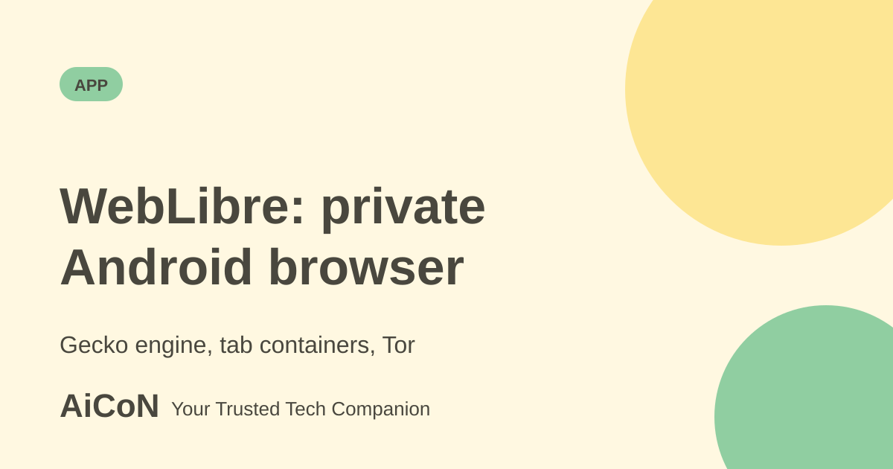

WebLibre: private Android browser on Gecko
WebLibre is a free, open-source Android browser built on Mozilla's Gecko engine. It adds tab containers, per-tab Tor routing and a search that runs on your phone. It is an independent project, not made by Mozilla.

What is WebLibre?
WebLibre is an Android browser built from scratch on Gecko, the engine behind Firefox, and Mozilla Android Components. The F-Droid listing describes it as an independent privacy-focused browser with extension support. The developer behind the Play listing is OnDevice UG, a German company. The code is open source under the GNU Affero General Public License v3.0 or later.
Main features
- Tab containers. Tabs are grouped into containers with separate cookies, so work, shopping and personal browsing stay apart. A container can be locked with biometrics and can use Tor.
- Tor routing. Chosen tabs or containers can go through the Tor network. It is per tab or container, not the whole browser, and it is slower than normal browsing.
- Local search. A search engine on your device finds things in open tabs, bookmarks, feeds and history. Typing a bang searches a site directly.
- Content blocking. The F-Droid text says ads, trackers and unwanted content are blocked by default.
- Local AI (opt-in). F-Droid says on-device models can group related tabs into containers. It is opt-in.
- Profiles. Separate profiles keep their own data, extensions and settings.
How to get it, step by step
- Choose a source. Google Play is easiest. F-Droid is the open-source app store and builds and signs the app itself.
- Check that your phone runs Android 8.0 or newer. F-Droid lists this as the minimum for the current version.
- Install the app and open it. Read the permissions it asks for.
- Create a container for a separate use, such as banking, and set a lock if you want one.
- Try Tor on one container for sensitive browsing, and keep normal browsing for everyday sites.
- Open the source code link if you want to read how it works.
| Price | Free. |
|---|---|
| Licence | AGPL-3.0 or later, open source. |
| Play listing | 1K+ downloads, rated Everyone. Updated 7 February 2026 on Play. |
| F-Droid | Version 0.20.0 listed, added 19 July 2026. |
Things to check before you rely on it
- It is a small, independent project with 1K+ Play downloads, so it has had far less testing than Firefox or Chrome.
- Tor makes browsing slower and does not make you anonymous if you sign in to your own accounts.
- Some sites may behave differently with strict privacy settings.
What changed since the short post?
Earlier WebLibre headlines are merged into this single guide. Current Play and F-Droid privacy descriptions disagree, so neither is treated as an independent privacy audit.
Frequently asked questions
Is it made by Mozilla?
No. It is independent. It uses Mozilla's Gecko engine.
Is it free?
Yes. No price is listed on Play or F-Droid.
Where do I get it without Google Play?
The F-Droid listing.
Does it support extensions?
F-Droid says it has extension support.
Sources: Google Play listing, F-Droid listing, Source code (GitHub). Checked 6 October 2026.